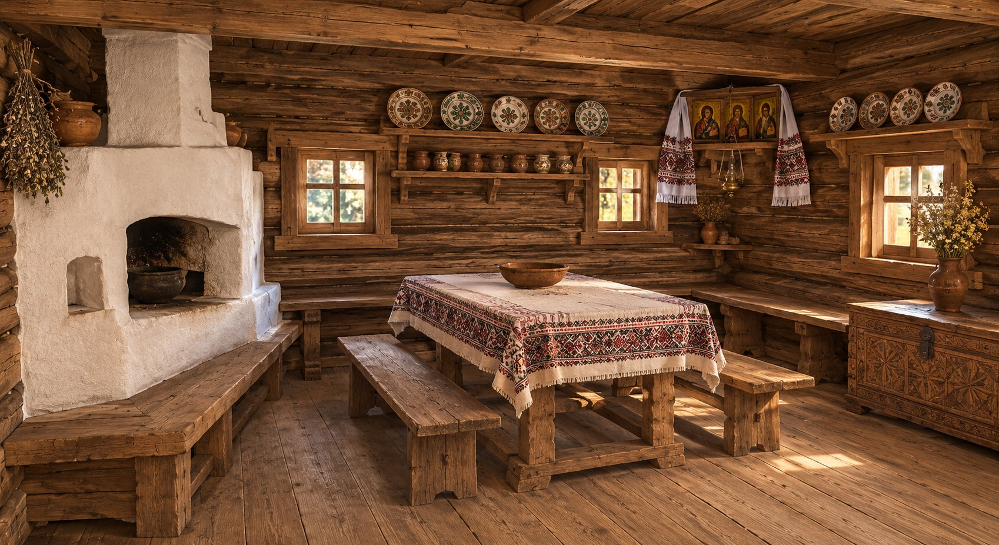
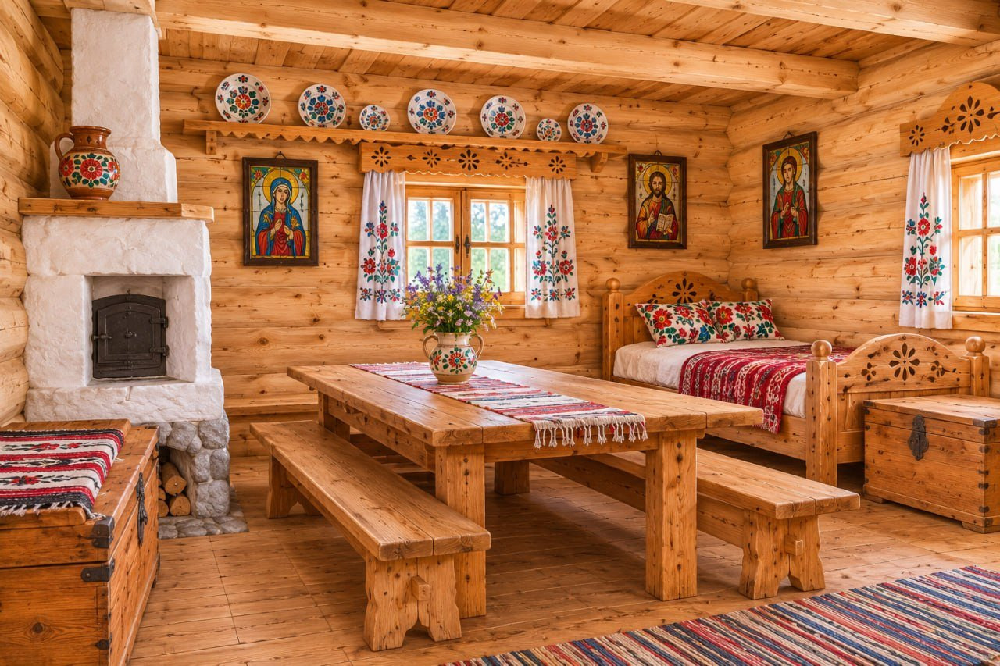

Дві гірські традиції по різні боки Карпат. Українська гуцульська ґражда і польська гуральська хата з Підгалля в 3D, усередині та в порівнянні.
Ґражда — традиційна садиба гуцулів у Карпатах. Житло, хлів і комори стоять квадратом і з'єднані спільним дахом, а всередині ховається закритий двір.
Натисніть на номер на фото, щоб дізнатися, що це за річ.
Гуралі — горяни Підгалля біля польських Татр. Їхня хата — окремий зруб із дуже високим крутим дахом, що стоїть на відкритому подвір'ї за низьким парканом.
Натисніть на номер на фото, щоб дізнатися, що це за річ.


| Гуцульська ґражда | Гуральська хата | |
|---|---|---|
| Де | Українські Карпати (Гуцульщина) | Польські Татри (Підгалля) |
| Тип садиби | Замкнений квадрат будівель із внутрішнім двором | Окрема хата на відкритому подвір'ї з низьким парканом |
| Худоба | Під одним дахом із житлом, у тій самій садибі | В окремих господарських будівлях |
| Дах | Кілька з'єднаних дахів довкола двору | Один дуже високий і крутий двосхилий дах |
| Захист | Сама садиба — як фортеця з одними воротами | Захищає товстий зруб, двір відкритий |
| Головна кімната | Хата з піччю, лавами, мисником і святим кутом | Біла ізба з піччю з комином, ліжком і образами на склі |
| Спільне | Зруб із смерекових колод, дахи з ґонту, піч у центрі побуту, лави вздовж стін, скриня, мальований посуд та ікони як прикраса. | |